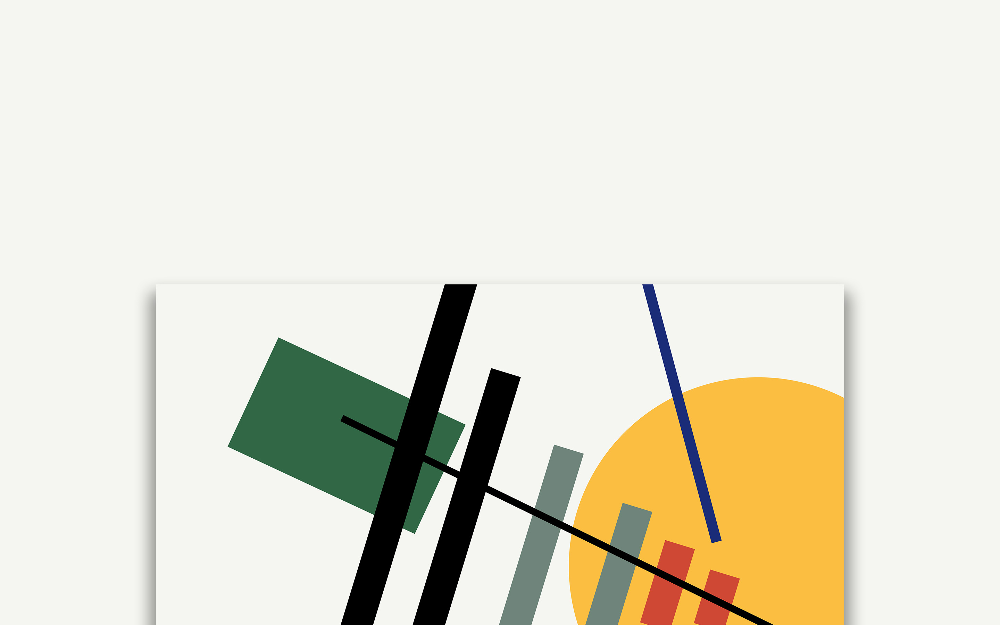

Interactive Graphics by Using Processing
Interactive Programming
Designer & Coder
Individual Work
This supermatism drawing aims to explore the composition of geometry and color. These elements are symmetrical yet asymmetrical, point to the same direction yet not the same point, and coloring the same yet differently on overlapping.

This collage aims to pay attention to the eyes. The background is the eye of Mona Lisa or Marilyn Monroe wrapped in the impossible shape. The foreground consists of different eyes from models, cartoons, sculptures, or the earth.
This typography work is composed of my identities as 'Chong Li', 'Designer', 'Maker', and 'Programmer'. The letters are scaled by their frequency and the colors changes according to mouse interactivity.
This work explores the optical art and how displacement of the squares influence our perception (please click the image to see the interactive version). The horizontal lines are all parallel yet they look unparallel.
This work explores "memento mori" by experimenting with the collage and how the dynamic movement of elements can tell a story.

This project explores the dynamic overlapping of different colors and how atmospheric perspective can create a sense of depth by using tint and transparency.